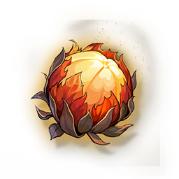

Explosive Charge
Missions

A natural fruit with explosive properties that can be used as a substitute for a bomb.
A special fruit that looks like a bomb, which can produce a bomb-like explosion when it encounters a violent impact or temperature change, and is often used as a substitute for explosives. Special means are needed for transportation and storage.